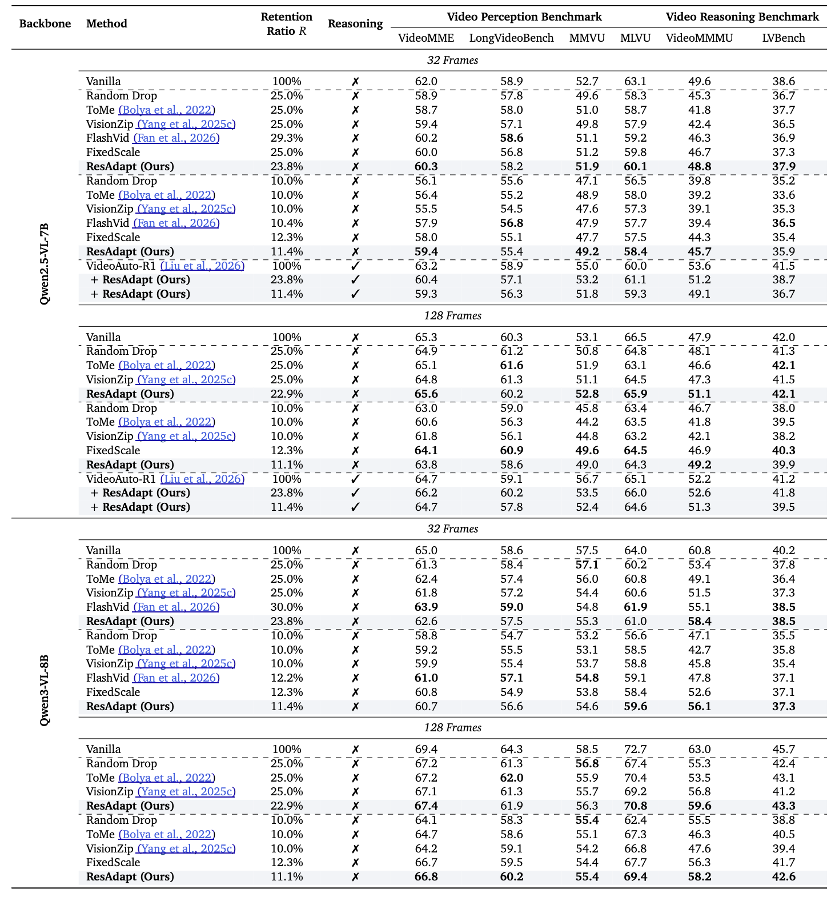
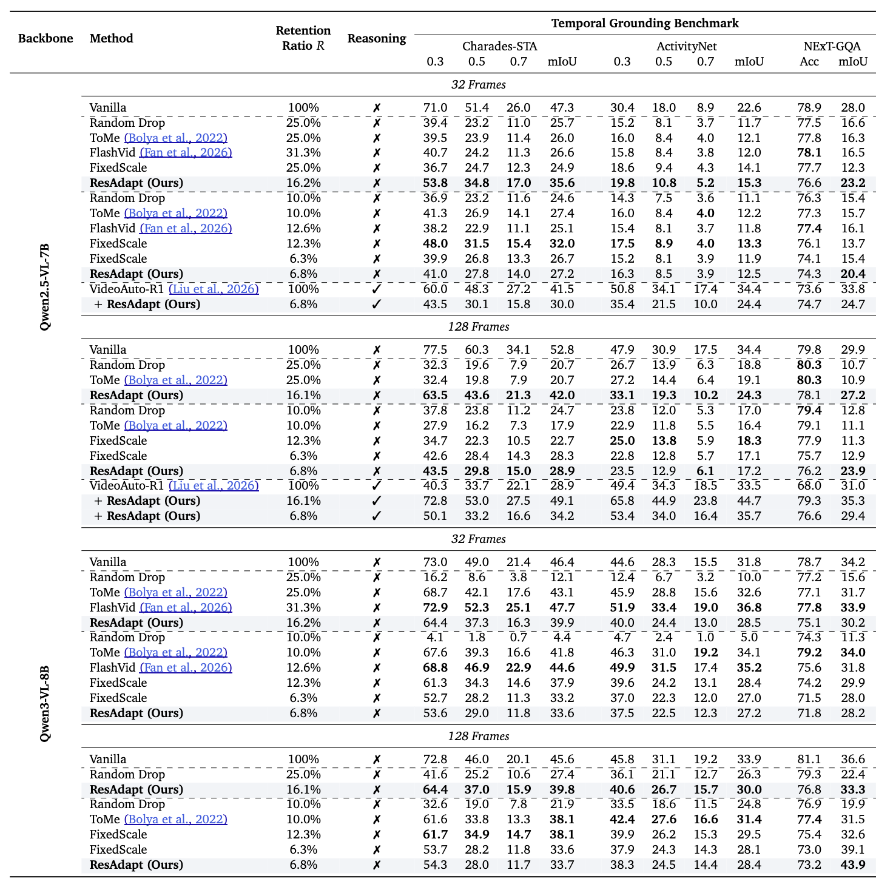
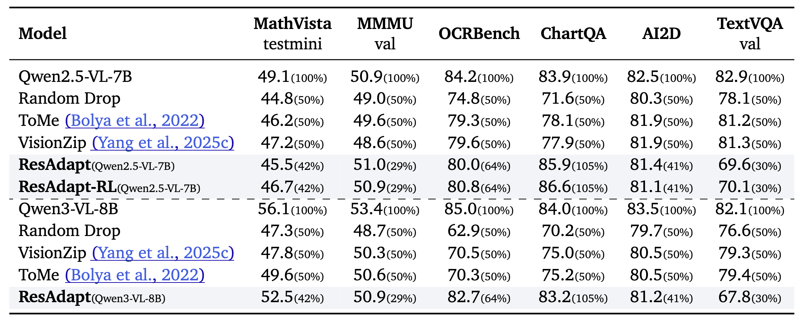
Multimodal Large Language Models (MLLMs) achieve stronger visual understanding by scaling input fidelity, yet the resulting visual token growth makes jointly sustaining high spatial resolution and long temporal context prohibitive. Existing efficiency strategies only partially resolve this tension: model-side token compression discards fine-grained evidence after encoding and can disrupt optimized inference kernels, whereas output-side agentic reasoning adds iterative latency and can still miss decisive cues when the initial view is too coarse.
We argue that the bottleneck lies not in how post-encoding representations are compressed but in the volume of pixels the encoder receives, and address it with ResAdapt, an Input-side adaptation framework that learns how much visual budget each frame should receive before encoding.
ResAdapt couples a lightweight Allocator with an unchanged MLLM backbone, so the backbone retains its native visual-token interface while receiving an operator-transformed input. We formulate allocation as a contextual bandit and train the Allocator with Cost-Aware Policy Optimization (CAPO), which converts sparse rollout feedback into a stable accuracy–cost learning signal. We further introduce a temporal-similarity regularizer that suppresses redundant high-budget allocation on adjacent similar frames, encouraging differentiated, content-aware allocation in a single forward pass.
Across budget-controlled video QA, temporal grounding, and image reasoning tasks, ResAdapt improves low-budget operating points and often lies on or near the efficiency–accuracy frontier, with the clearest gains on reasoning-intensive benchmarks under aggressive compression. Notably, ResAdapt supports up to 16× more frames at the same visual budget while delivering over 15% performance gain. The learned policy exhibits open-loop active perception, concentrating visual budget on information-dense content without modifying the backbone architecture.
Input-side adaptation vs. token reduction after encoding
Comparison of token-reduction paradigms. We introduce input-side adaptation, which dynamically allocates variable image resolutions or video frame quantities before visual encoding. This mitigates initial feature explosion, preserves fine-grained information for the encoder, keeps the backbone’s native token interface, and runs in a single non-iterative pass.
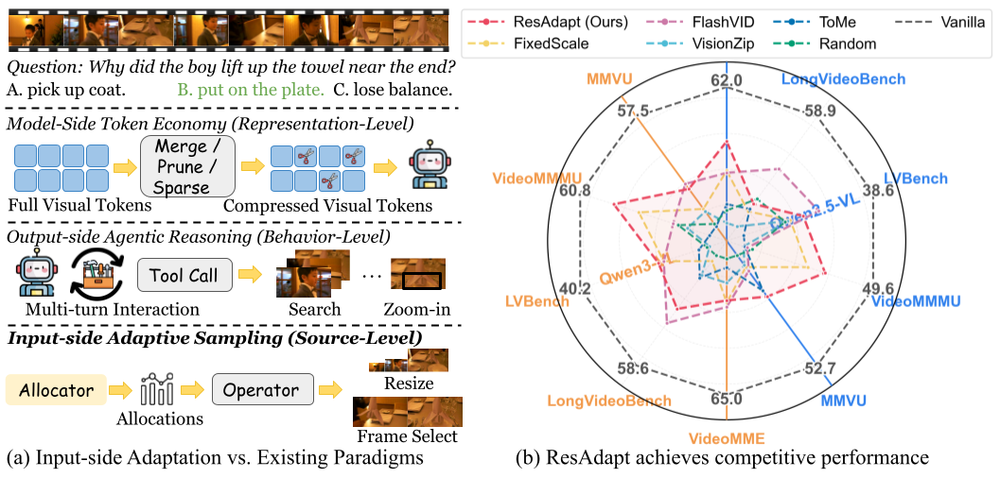
Allocator + frozen MLLM, trained with CAPO
Overview of the ResAdapt framework. (a) A lightweight vision Allocator pairs with a frozen MLLM; the Allocator assigns token budgets per frame from task context, which determine spatial resolutions for the dynamic visual encoder. (b) End-to-end training uses Cost-Aware Policy Optimization (CAPO) with reinforcement learning to balance accuracy and cost.
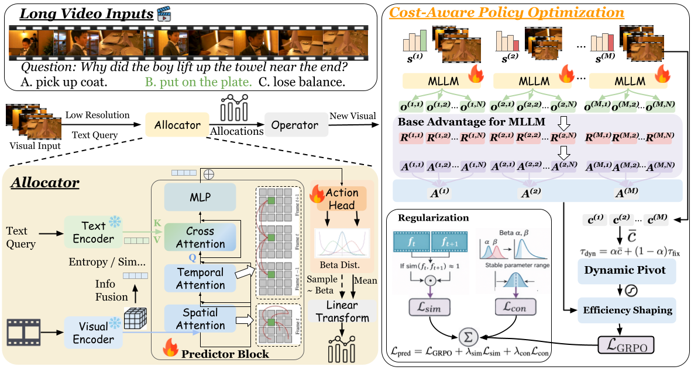
Main metrics (auto carousel), latency, operators, reward / CAPO ablations, and temporal analysis — each carousel highlights the current panel below its title.
Main results. Video QA, temporal grounding, and image reasoning under controlled visual budget. The line below matches the panel currently shown (auto-advances every few seconds; pauses on hover).
Video QA — efficiency–accuracy under budget.



1 / 3
Runtime overhead. Inference cost relative to baselines.
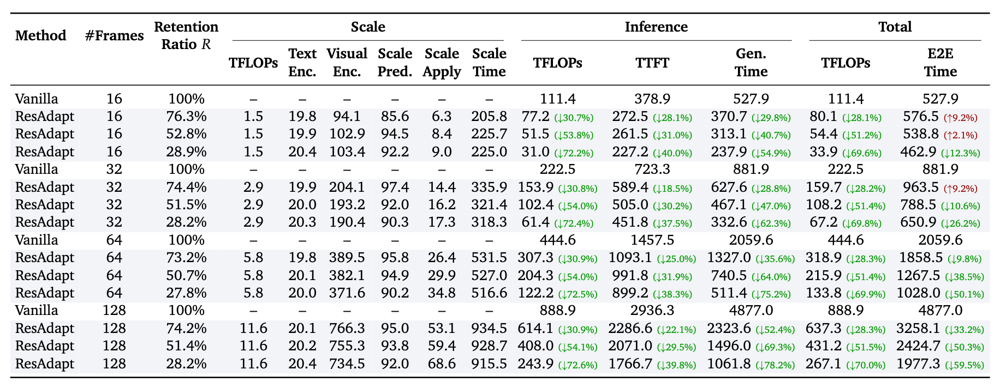
Operator generalization. Cross-operator robustness of the learned policy.
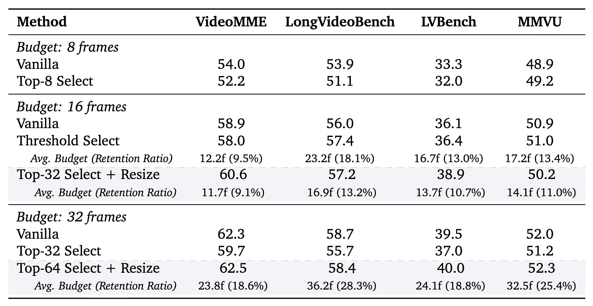
Reward design and CAPO ablations. Training / validation curves for policy adaptivity, mean predicted scale, and reward variants; see the paper for definitions.
Per-sample adaptivity and scale range — training vs. validation (CAPO vs. direct cost / no cost).
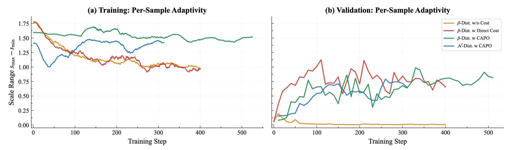
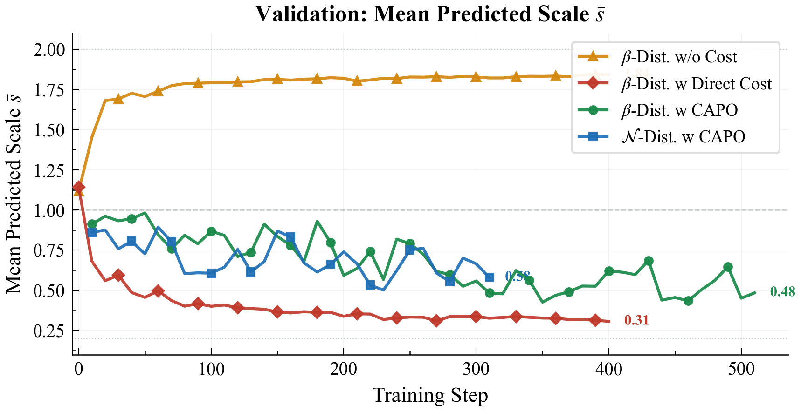
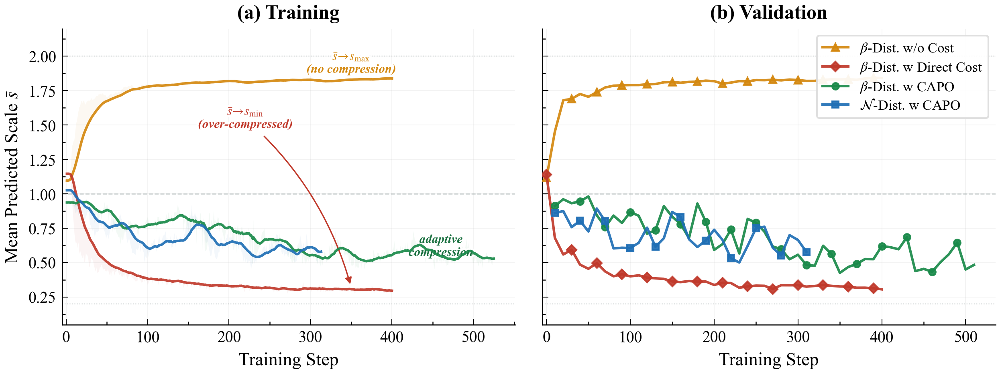
1 / 3
Temporal regularization and allocation behaviour. Similarity loss (Lsim), dataset-level allocation on VideoMME, and emergent active perception.
L_sim ablation — temporal regularization complements CAPO (scale vs. frames).
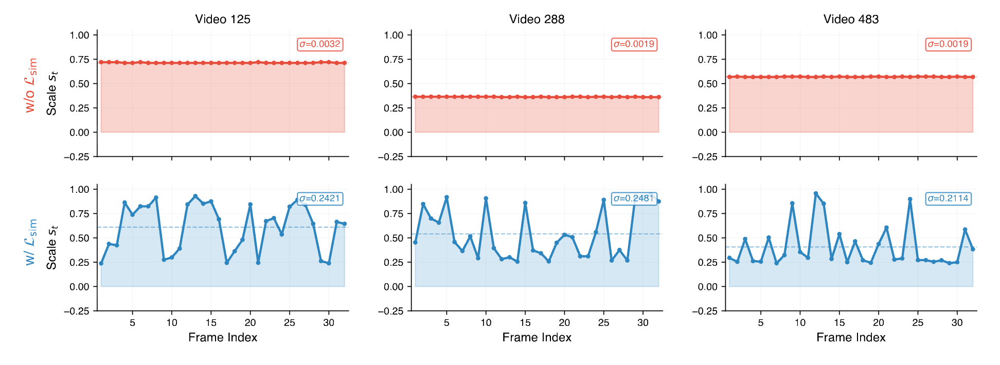
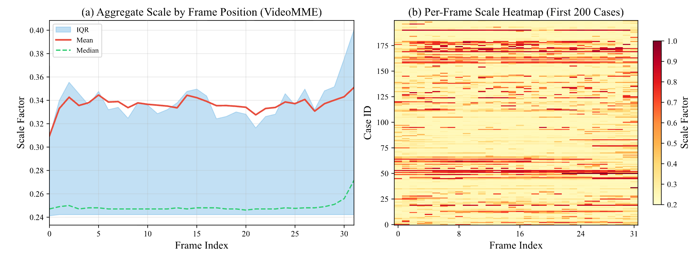
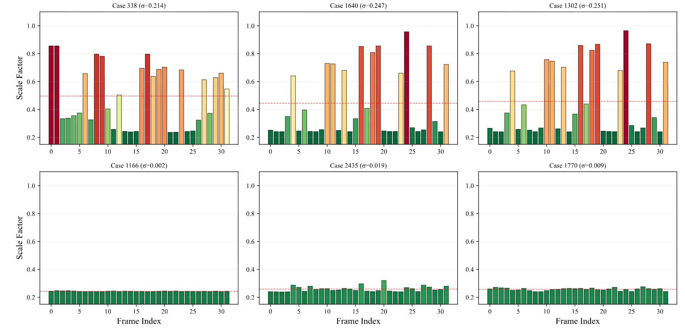
1 / 3
Qualitative grids from the paper appendix (32 sampled frames; warmer borders = higher scale). Prompts match Appendix §Qualitative Case Studies.
Qualitative case studies. Each slide shows the task prompt (Q:) and the predicted per-frame scale layout. The carousel below matches the style of the main-result panels: auto-advance, pause on hover, pause when the tab is hidden.
Case 1 — Video-MMMU Comprehension

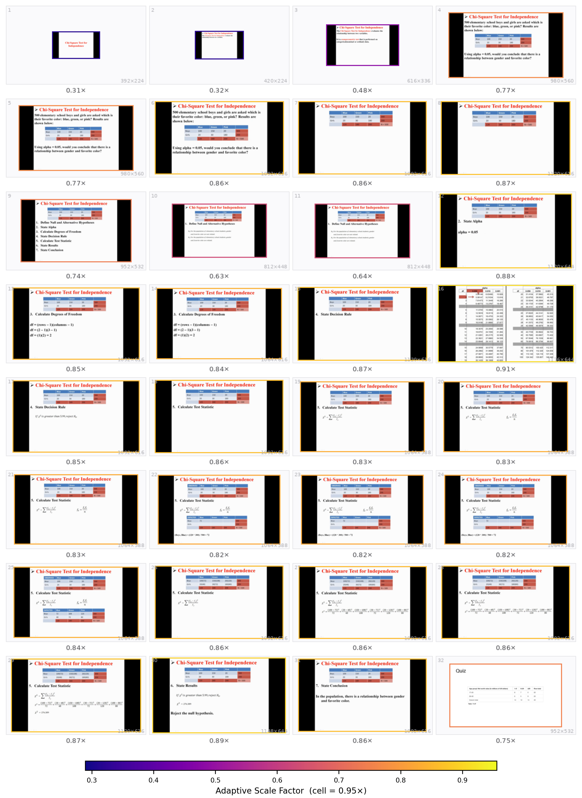
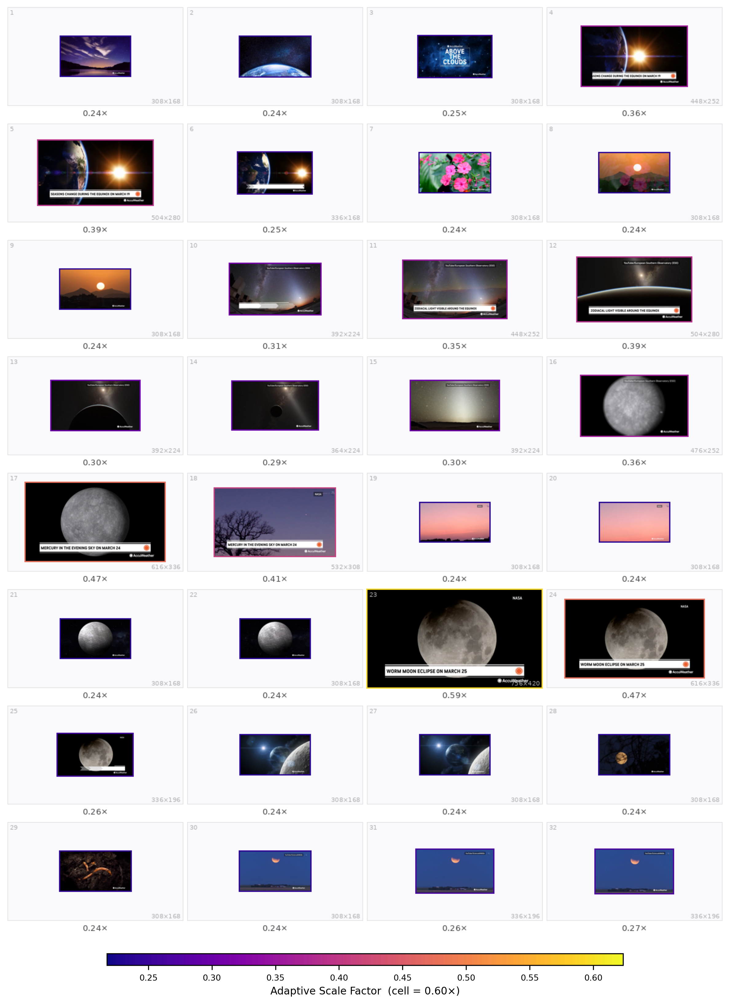
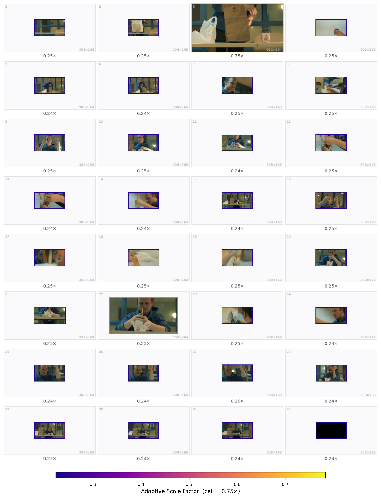
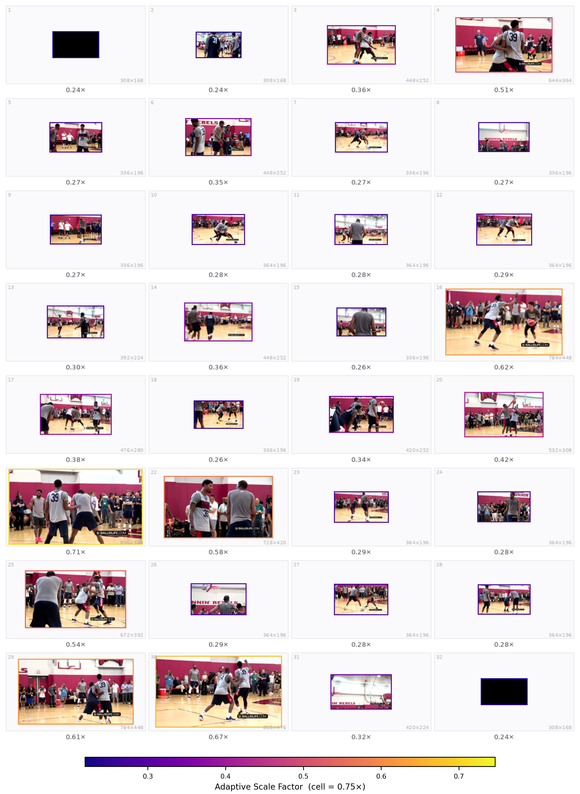
1 / 5
arXiv:2603.28610
@article{liao2026resadapt,
title={ResAdapt: Adaptive Resolution for Efficient Multimodal Reasoning},
author={Liao, Huanxuan and Jiang, Zhongtao and Hao, Yupu and Tan, Yuqiao and He, Shizhu and Wang, Ben and Zhao, Jun and Xu, Kun and Liu, Kang},
journal={arXiv preprint arXiv:2603.28610},
year={2026}
}